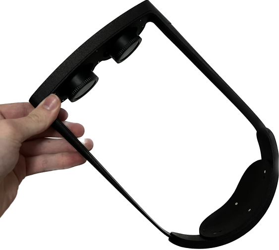

I designed and built a prototype VR headset using pancake optics and uOLED display technology for a startup I was working with at the time.
Because of the unique design choices I made with this project, this device was one of the thinnest HMDs in the world at the time.
Despite the compact form-factor, my prototype retains a standard field of view (FOV) of 90º, which is equivalent to Meta's most popular model, Quest 2.
This prototype boasts a resolution that is 30% higher than Meta's Quest 2, all while being ≈ 70% thinner.
While this device is far from being consumer ready or mass-producible, I'm pleased with my first attempt and I look forward to improving on it in the future with an internal tracking system and potentially even stand-alone compute.
A key challenge I faced with this project was acquiring the cutting-edge display technology needed to power such a thin device.
I needed ultra-high resolution micro-displays with a resolution around 9 times higher than a flagship iPhone. The only way to acquire these today is through OEMs in China, and to buy from them you must be a business entity. I formed an LLC expressly for this purpose, managing to secure several display samples as an individual from the same company supplying Apple.
For this project I also began to outsource the production of my parts for speed and quality. This helped me to expand on my CAD skills by forcing me to optimize my designs for manufacturability. I learned to iterate quickly on designs while considering constraints more closely.